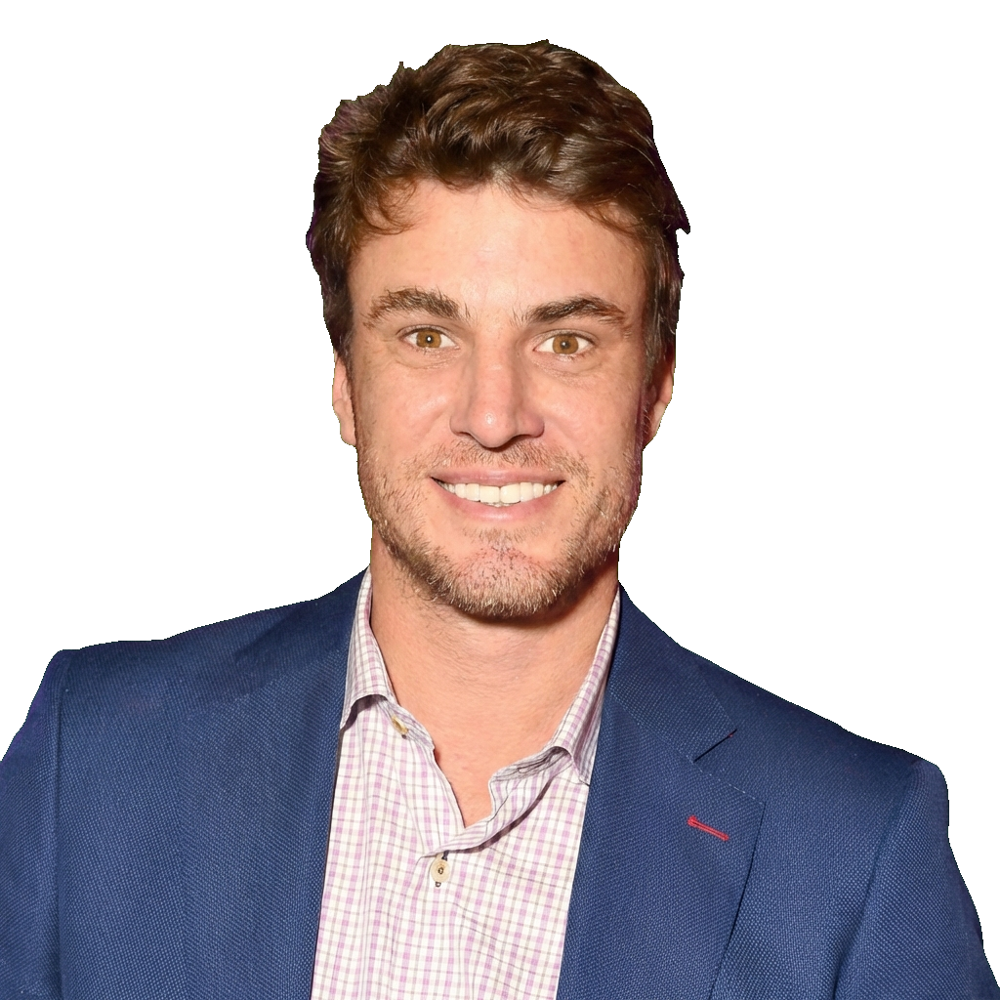
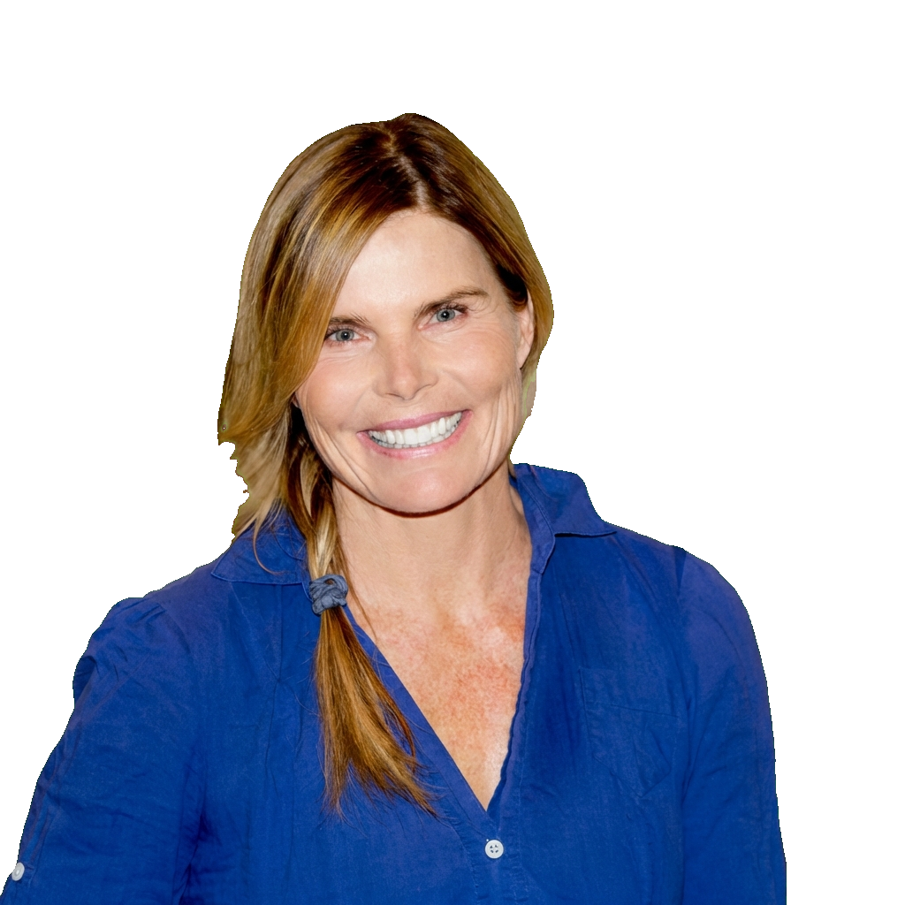
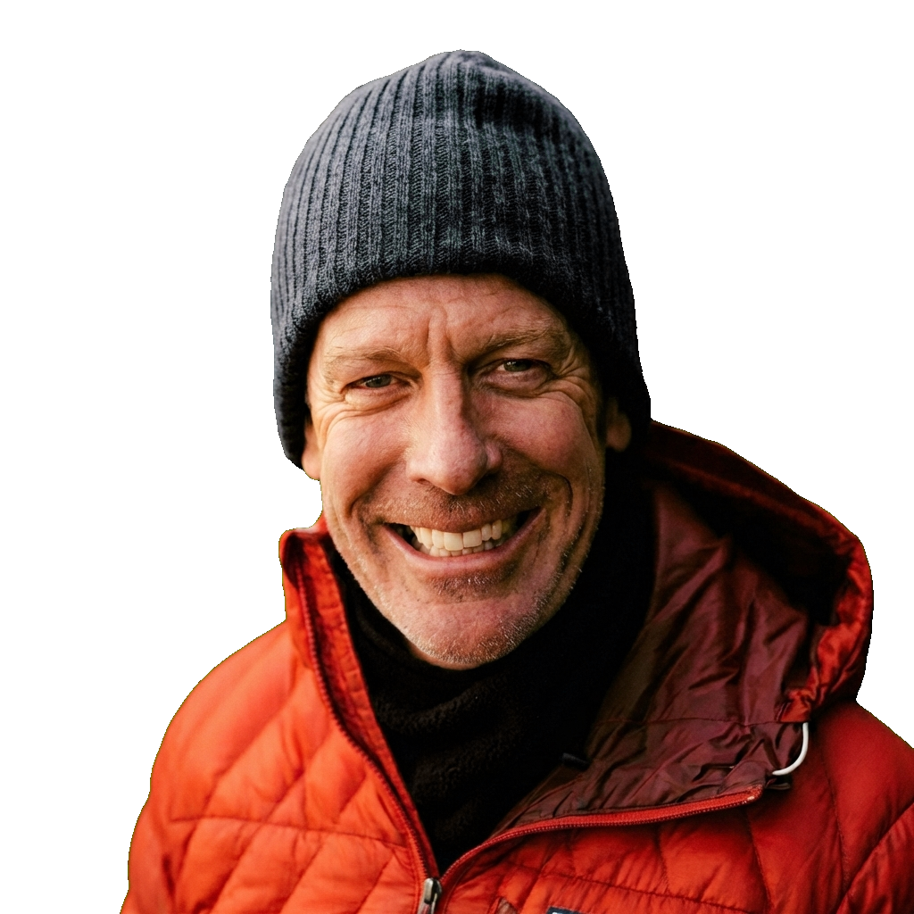
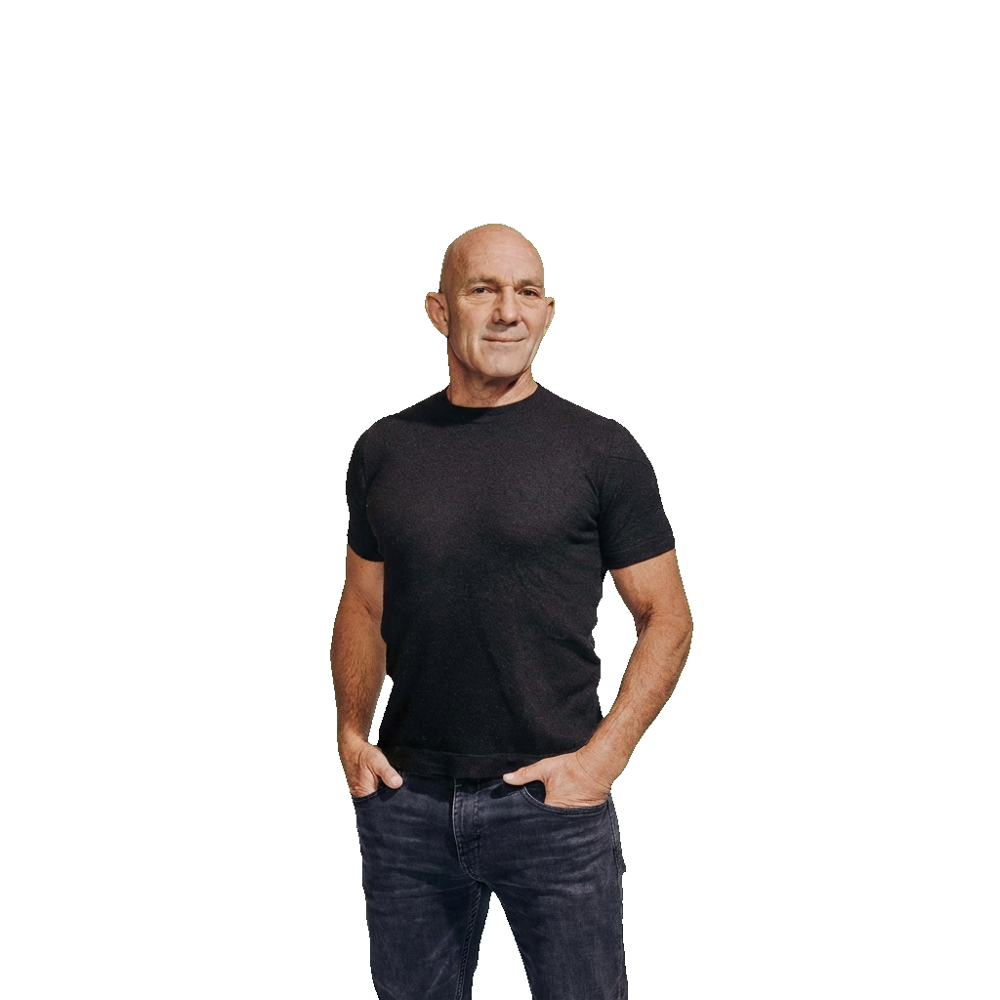
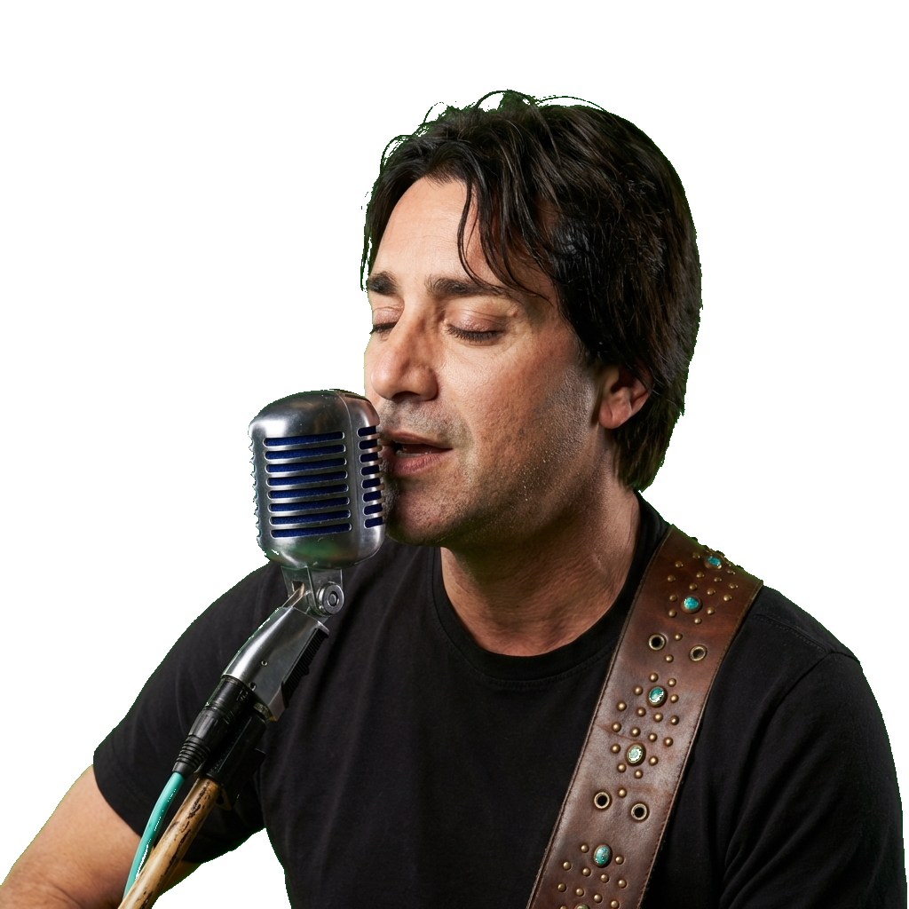

The Lineup
Legends of the Summit
Swipe to Explore Lineup →

Shep Rose
TV Personality

Mariel Hemingway
Actress & Wellness Author

Mark Pattison
NFL Veteran & 7 Summits Climber

Tom Flick
Leadership Expert

John Foley
Blue Angels Pilot

Steve Azar
Music Legend